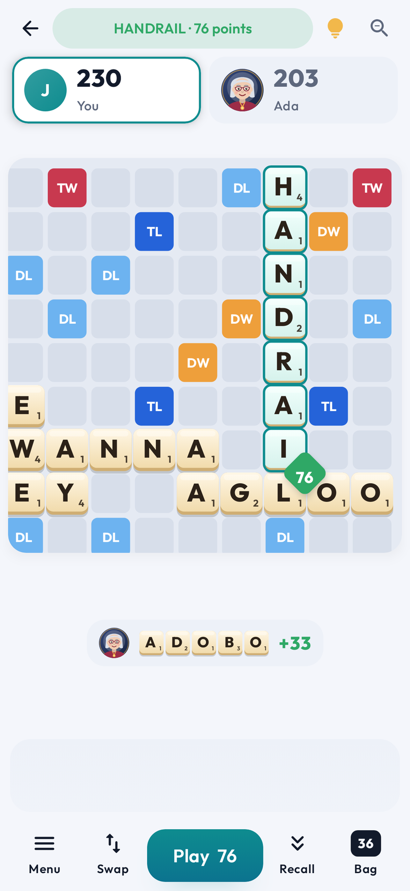
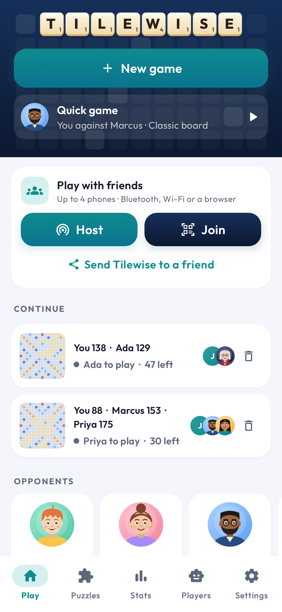
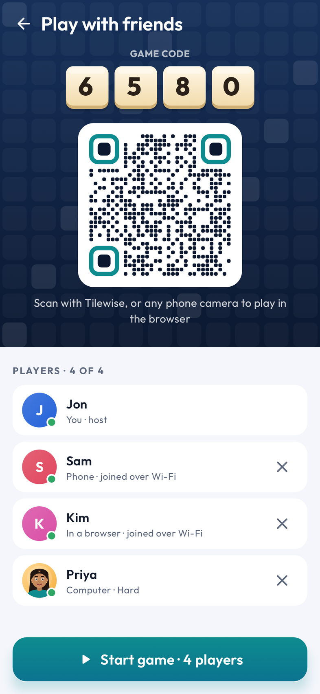
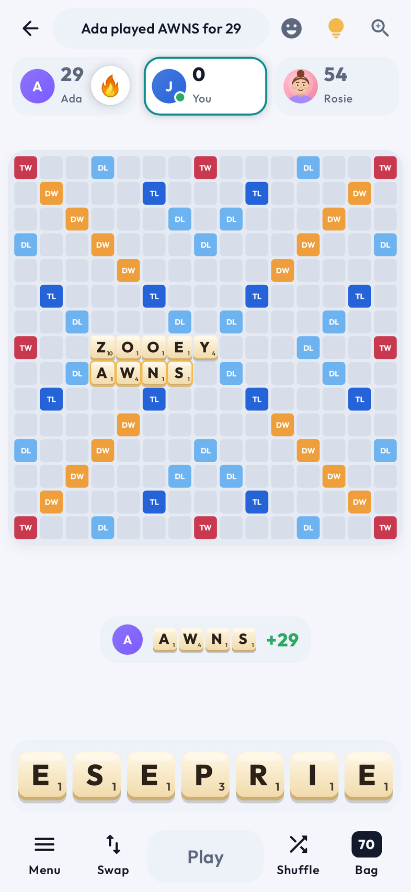
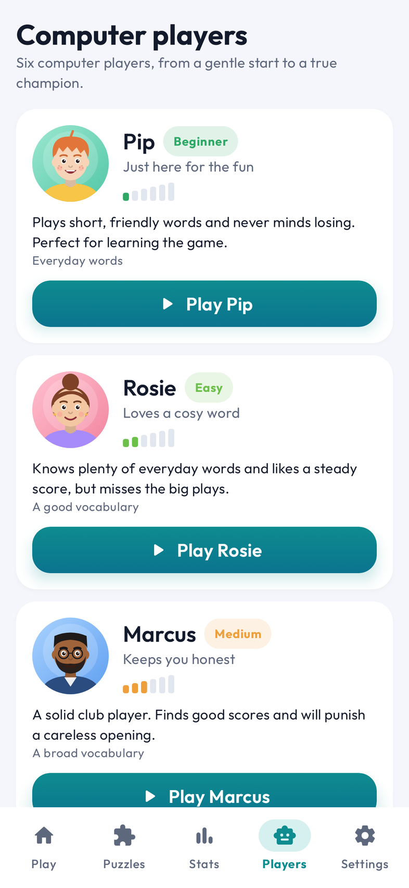
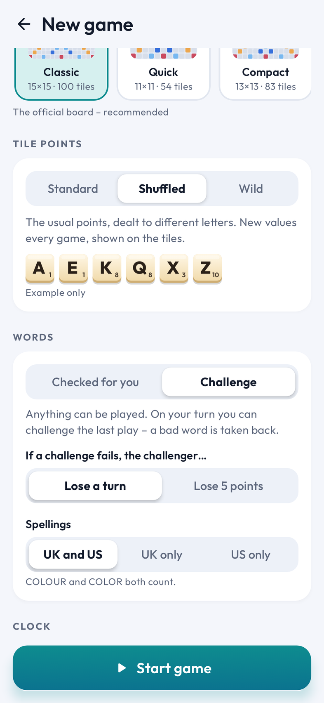
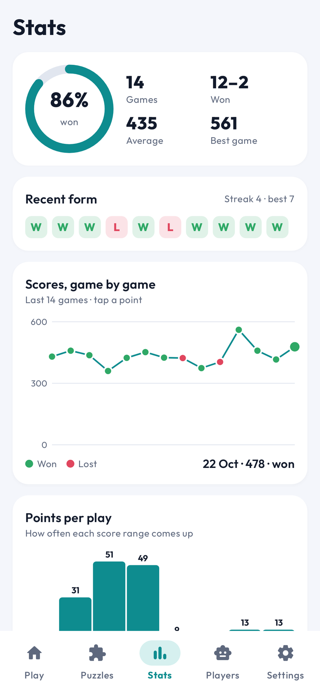
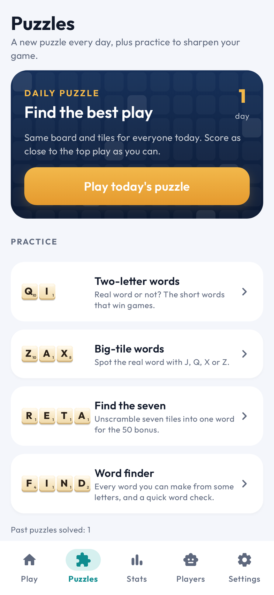

Every word. Every board. Every friend.
Tilewise is the classic crossword tile game for Android, played to the official rules, with every English word built in and six computer players who each play their own way.
Play on your own, pass one phone round, or link up to four phones by Bluetooth or Wi-Fi, even in airplane mode. Friends without the app can join from their phone's browser.
Download for AndroidHow to install
- Version 1.0.2
- Android 8 or later
- 7.3 MB
Free, with nothing to unlock. No adverts, no account with the developer, no tracking. Compare or read the release notes.
Chrome may say the file might be harmful. It shows this for app files that do not come from Google Play. Choose Download anyway.

- No advertsNone in the app and none on this site.
- Nothing to buyEvery board, player and puzzle is free.
- Works offlineNo internet needed, ever.
- No accountNothing to sign up for.
A look inside
These are the real screens, drawn from the app's own code with made-up games. Swipe or scroll sideways to see them all.







How it works
Everything the game needs is inside the app: the words, their meanings, the computer players and the link between phones.
Choose who to play
Take on one of six computer players, add people sharing your phone, or host a game for up to three friends on their own phones.
Play your word
Drag tiles onto the board or tap a tile then a square. The score and any word not in the list show before you press Play.
Look back
Every game feeds your stats. Review any game turn by turn to see the best play you could have made.
Everything is in, and all of it is free
Nothing below is held back for a paid tier, because there is no paid tier.
The game
- Official rules
- 100 tiles and two blanks, the 50-point bonus for all seven tiles, the draw for first turn, the end-of-game tile count and six scoreless turns to finish.
- Every English word
- 247,842 words with UK and US spellings, meanings for about 108,000 of them, and your own word list if you have one.
- Checked or challenged
- Have words checked as you play, or play challenge rules: anything goes until someone challenges, and a failed challenge costs a turn or 5 points.
Computer players
- Six with names and faces
- Pip, Rosie, Marcus, Priya, Dex and Ada, from beginner to champion. The lower levels know the everyday words; Dex and Ada know them all.
- They challenge too
- In challenge games the computer players challenge your plays, and Ada never misses a bad word.
- Hints and review
- See your best plays when you're stuck (the host can turn hints off), and step through any finished game with the best play on every turn.
Your way
- Eight boards
- Classic is the default. Quick, Compact, Crossroads, Diamond, Grand 17×17, Giant 21×21 with quadruple squares, and a new random board every game.
- Tile points
- Standard, shuffled between letters, or wild from 1 to 10.
- Clocks and themes
- A game clock or a turn timer that runs round your card from green to red, six board colours including a high-contrast one, and light and dark looks.
Play with friends
- Up to four phones
- Join by Bluetooth or Wi-Fi Direct with no internet, even in airplane mode, by the same Wi-Fi, by QR code or by typing a 4-digit code.
- No app? No problem
- Friends scan the QR with their phone camera and play in the browser, iPhones included. With no Wi-Fi, Tilewise starts a hotspot for them.
- Fair across phones
- Each phone gets only its own tiles, and the host checks every move. Drop out and you rejoin your seat; a computer player can take over if someone leaves.
Stats and puzzles
- Comprehensive stats
- Win rate, form, streaks, a score chart, points per play, best plays, bonus squares, big-tile plays and head-to-head records, for everyone who plays on your phone.
- Daily puzzle
- Find the best play on the same board as everyone else, with up to three stars and a day streak.
- Practice
- Two-letter words, J/Q/X/Z words, find the seven, and a word finder that is locked during games with other phones.
Your games stay with you
No servers
There are no accounts and no servers. Phones talk only to each other, on your own network or directly.
No ads, no tracking
There is no advertising, analytics or tracking, in the app or on this site.
Only what you share
Other players' phones get only what the game needs: names, moves and their own tiles.
Installing and updating
Tilewise is not on Google Play, so your phone asks a couple of extra questions the first time.
Download the app file
Tap Download on your phone. The file is called Tilewise.apk and is about 7.3 MB. If Chrome says the file might be harmful, choose Download anyway.
Allow the install
Open the file. The first time, Android asks you to allow your browser to install apps. Allow it, go back and tap Install. If Google Play Protect steps in, choose More details, then Install anyway.
Updating later
Tilewise never contacts the internet, so it cannot check for updates itself. New versions are listed on the release notes page: install the new file over the old one and your games and stats are kept.
Version 1.0.2, released 22 November 2026. See the release notes, or check your download.
Questions
Is Tilewise really free?
Yes. There is no paid version, no subscription and no adverts, and nothing in the app is locked. Every board, computer player, puzzle and stat is in the free app.
Is it on Google Play?
No. Tilewise is a personal project and is downloaded from this site as an Android app file. It needs Android 8 or later, which covers almost every phone in use.
Is it the official board game app?
No. Tilewise is an independent game that follows the well-known rules of crossword tile games. It is not connected with any board game maker or brand.
Which words are allowed?
Tilewise has 247,842 English words, made from the free ENABLE and SCOWL word lists, with UK and US spellings. You can choose UK only, US only or both. It does not include the licensed tournament lists, but you can import your own list.
Can I play without the internet?
Yes, always. On your own, against the computer, or pass and play, it never needs a connection. Phones can link by Bluetooth with airplane mode on: switch Bluetooth back on after turning airplane mode on.
How do my friends join?
Open Play with friends and tap Host. Your screen shows a 4-digit code and a QR code. Friends with Tilewise tap Join and scan it, or type the code. Friends without it scan the QR with their phone's camera and play in their browser.
Can an iPhone join?
Yes, in the browser. An iPhone on the same Wi-Fi scans the QR and plays in Safari. With no shared Wi-Fi, Tilewise starts a hotspot for it to join first.
How do I get Tilewise onto a friend's phone?
Tap Send Tilewise to a friend to share the app file by Quick Share or Bluetooth, or let them download it from the game page in their browser.
Can other players see my tiles?
No. Each phone is sent only its own tiles. The other racks and the order of the bag are never sent, and everything is shown only when the game ends.
What happens if someone loses the connection?
Their phone reconnects to the same seat by itself. The host sees who is offline and can let a computer player take over that seat.
Why does it ask for location or nearby devices?
Android needs these to find phones close by over Bluetooth and Wi-Fi Direct. Tilewise asks only when you host or join, and never uses or stores your location.
Who made it?
Tilewise is made by Jonathan Jackson, an independent developer in the United Kingdom.
Your move
Free, with no adverts and nothing to unlock. Made by the developer of several other free Android apps: see them all.